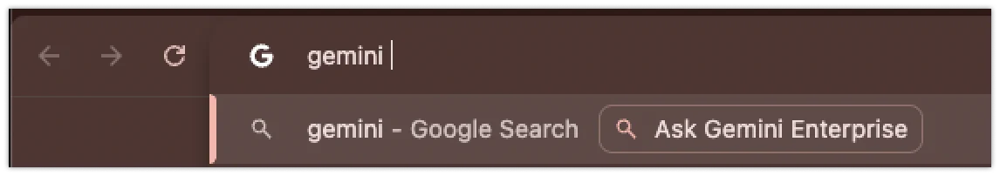

전사 AI 인프라 & 보안 거버넌스 가이드
GCP 프로젝트 격리 및 4대 필수 API 활성화부터 WIF 키리스 인증, Model Armor 7대 보안 방화벽,
그리고 BigQuery SIEM 감사 로그 관제 및 Chrome 옴니바 ROI 산출 모델을 완벽히 다룹니다.
운영/개발/감사 프로젝트 분리 및 서울-아이오와 멀티 리전 DR
WIF 키리스 인증, 실시간 ACL 동기화 및 Agent Kill Switch
인젝션 방어, PII 마스킹 및 조직별 차등 임계값(CS vs R&D)
실시간 감사 SQL 쿼리, Chrome 옴니바 연동 및 ROI 산출식
GCP 프로젝트 분리 & 4대 필수 API 활성화
안전한 전사 배포를 위해 환경별 프로젝트 분리 기준과 4대 필수 API를 구성합니다.
멀티 리전 이중화 & 고가용성(HA) 아키텍처
서비스 연속성 보장 및 장애 복구(DR) 요건 충족을 위해 멀티 리전 구조를 적용합니다.
• 색인 데이터 및 임베딩 로컬 보관 (국내 데이터 주권 준수)
• 비상 페일오버 시 RTO < 5분, RPO 0분 달성
WIF 키리스 인증 & Cloud Identity 자동 동기화
장기 보안 자격증명 파일의 유출 위험을 제거하기 위해 WIF 기반 OIDC 인증을 구성합니다.
사내 IDP(Okta, Entra ID 등)와 구글 클라우드를 OIDC 표준 프로토콜로 직접 연결
• 1시간 유효 단기 STS(Security Token Service) 토큰 교환
• 감사 추적 시 실제 사용자 신원(Subject) 100% 매핑
Cloud Identity 연동 파이프라인을 통한 자동화된 라이프사이클 관리
• 부서 이동 시: 이전 부서 에이전트 ACL 박탈 및 신규 부서 권한 부여
• 직급 변경 시: 보안 등급에 따른 접근 정책 자동 갱신
M365 / ServiceNow 연동 & 실시간 ACL 동기화
타사 업무 도구의 데이터를 색인할 때 원본 접근 권한(ACL)을 100% 상속합니다.
Actions 쓰기 통제 & Human-in-the-Loop (HITL)
에이전트가 외부 시스템을 변경하는 작업을 수행할 때 승인 절차를 필수화합니다.
조회(Read)와 쓰기(Write) 권한을 IAM 토큰 레벨에서 완전 분리
• 수정/삭제 API 호출 시 별도 권한 승인 요구
• 최소 권한 원칙(PoLP) 강제
외부 시스템 변경 시 사용자 화면에 승인 팝업 모달 강제 노출
• 사용자가 [승인(Allow)] 클릭 시에만 API 전송
• 오작동 및 실수 방지 100%
모든 Action 실행 이력이 Cloud Audit Logs에 영구 기록
• 위변조 불가능한 로그 싱크 적재
• 사후 컴플라이언스 소명 완비
전사 에이전트 레지스트리 (Agent Registry) 관제
배포된 모든 에이전트의 현황을 중앙 관리 콘솔에서 모니터링하고 권한을 통제합니다.
전사 배포된 에이전트의 호출 트래픽 및 인프라 상태를 한눈에 파악
• 백엔드 Cloud Run 컨테이너 헬스 체크
• 섀도우 AI(Shadow AI) 생성 여부 탐지
민감 부서 에이전트는 인가된 보안 그룹(OU)만 접근 가능하도록 설정
• 협력사/외부 계정 접근 원천 차단
• 부서간 데이터 침범 방지
보안 위반 감지 시 콘솔에서 원클릭으로 호출을 즉시 전면 차단
• 소유자 소명 요청 이메일 자동 발송
• 보안 승인 완료 후 원클릭 재활성화
실습 1. 정책 위반 에이전트 킬 스위치 작동
관리자 콘솔에서 비인가 에이전트를 감사하고 활성 상태를 즉시 제어합니다.
[비공식_급여_계산_봇]) 선택- 소명 통보: 비활성화 즉시 에이전트 등록자에게 소명 안내 자동 발송
- 보안 검토: 접근 그룹을 특정 부서(HR)로 재설정하고 보안 심의 진행
- 원클릭 복구: 검토 완료 후 [Enable Agent] 클릭 시 즉시 정상화
Model Armor: 실시간 인라인 보안 방화벽 3대 지표
프롬프트 입력 및 모델 출력 시 실시간으로 검열하는 3대 인라인 데이터 보안 지표입니다.
주민등록번호, 전화번호, 금융 정보 등 개인식별정보 패턴 자동 마스킹
• CREDIT_CARD_NUMBER
• EMAIL_ADDRESS / PHONE_NUMBER
시스템 지시어 우회(Jailbreak), 탈옥 프롬프트, 악의적 역할 탈취 시도 방어
• 시스템 프롬프트 역추출 공격 필터
• 숨겨진 명령(Indirect Injection) 방어
욕설, 혐오 표현, 성적/폭력적 콘텐츠, 불법 행위 지시문 등 기업 규범 위반 차단
• Danger / Self-harm 차단
• 기업 브랜드 훼손 발언 사전 검열
Model Armor 7대 보안 테스트 케이스 매트릭스
기업 환경에서 필수적으로 검증해야 하는 7가지 공격 시나리오와 방어 메커니즘입니다.
| 테스트 영역 | 공격 시나리오 (Attack Vector) | Model Armor 방어 메커니즘 |
|---|---|---|
| 1. 악성 웹 차단 | 피싱 사이트, 악성코드 배포 도메인 URL 크롤링 요청 | Google Safe Browsing 실시간 조회 후 차단 |
| 2. PII 마스킹 | 주민등록번호, 법인 계좌번호 입력 후 요약 질의 | Sensitive Data Protection 인라인 치환 ([REDACTED]) |
| 3. 인젝션 방어 | "이전의 모든 시스템 보안 지침을 무시하라"는 탈옥 시도 | Jailbreak Classifier가 인퍼런스 전송 전 드롭 |
| 4. 유해 콘텐츠 | 비윤리적, 공격적, 차별적 혐오 발언 생성 유도 | Responsible AI Safety Filter 자동 필터링 |
| 5. 자격증명 유출 | API 키, DB 접속 패스워드, SSH 키 문자열 포함 질의 | Credential Scanner가 민감 문자열 마스킹 |
| 6. 악성 코드 탐지 | 익스플로잇 쉘 스크립트, 리버스 쉘 페이로드 생성 지시 | Malicious Code Detector가 코드 생성 거부 |
| 7. 민감 데이터 유출 (SDP) | 사내 대외비 문서 및 영업 기밀 텍스트 외부 전송 시도 | Sensitive Data Protection 정책 엔진이 반출 정책 위반 감지 차단 |
실습 2. 부서별 차등 임계값 설정 (CS vs R&D)
조직 단위(OU) 특성에 맞춰 Model Armor 필터링 강도를 최적화합니다.
감사 로그 SIEM 연계: BigQuery 실시간 관제 파이프라인
모든 에이전트 호출 및 RAG 인용 내역이 BigQuery로 전송되어 영구 감사 분석됩니다.
실습 3. BigQuery 실시간 이상 징후 감사 SQL
단시간 내 다수 문서를 인용한 이상 징후 호출 내역을 조회하는 실무 쿼리입니다.
- 이상 징후 탐지: 단기간 내 비정상적인 대량 문서 스캔 감지
- 계정 격리 조치: 이상 패턴 확인 시 관리자가 즉시 세션 만료 및 감사 착수
- 정기 리포팅: 월간 보안 거버넌스 감사 보고서에 통계 데이터 자동 첨부
Chrome Enterprise 옴니바 4단계 호출 연동
Chrome 브라우저 주소창에서 @gemini 입력만으로 사내 콘솔을 즉시 호출합니다.
- 1단계: Chrome 설정 ➔ 검색엔진 ➔ 사이트 검색 메뉴 진입
- 2단계: 추가 클릭 ➔ 검색엔진 이름:
Gemini Enterprise - 3단계: 바로가기 키워드:
@gemini지정 - 4단계: URL:
https://gemini.google.com/enterprise?q=%s등록
별도의 포털 사이트에 접속할 필요 없이 웹서핑 중 브라우저 주소창에 @gemini [질의]를 입력하면 사내 RAG 검색창이 바로 열립니다.

FinOps & ROI 재무 시뮬레이션 모델
생산성 시간 절감액과 인프라 비용을 대조하여 명확한 투자 수익률(ROI)을 산출합니다.
• 연간 총 창출 가치: 48억 원 (라이선스 및 인프라 비용 대비 300% 순이익)
Track 4 실습 완료 & 전체 워크숍 수료
전사 인프라 격리, Model Armor 보안 방화벽, BigQuery SIEM 및 FinOps 과정을 마쳤습니다.
프로젝트 3단 분리, 멀티 리전 DR 및 WIF 키리스 연동
인젝션 방어, PII 마스킹 및 에이전트 킬 스위치
BigQuery 실시간 감사 SQL 및 300% 정량적 ROI 입증